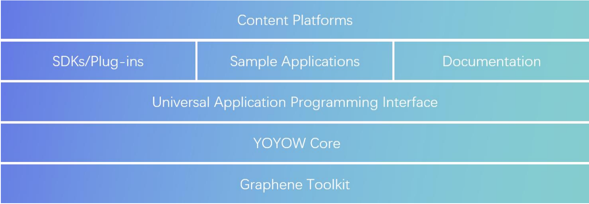
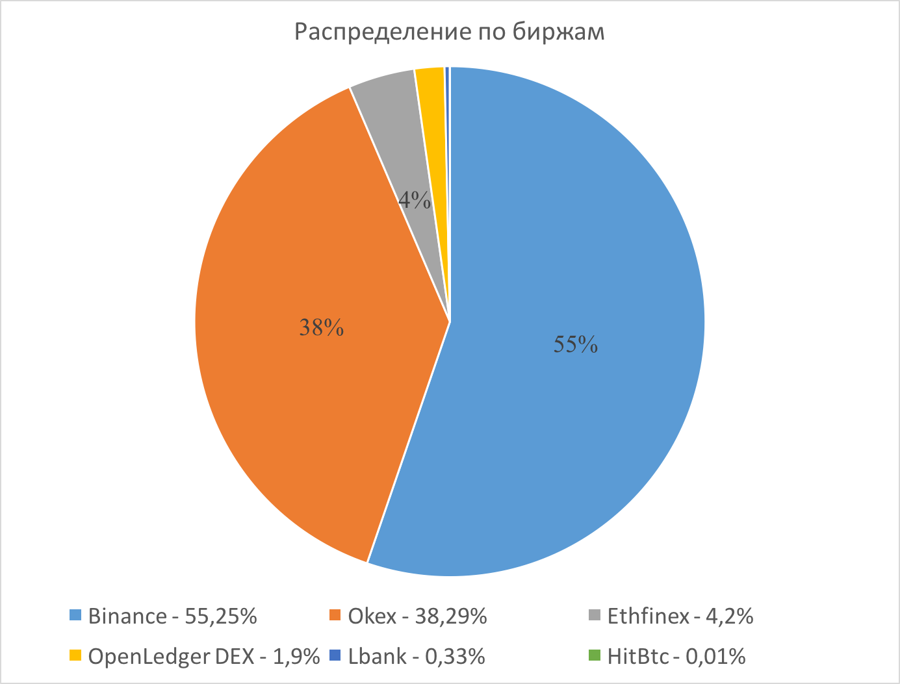
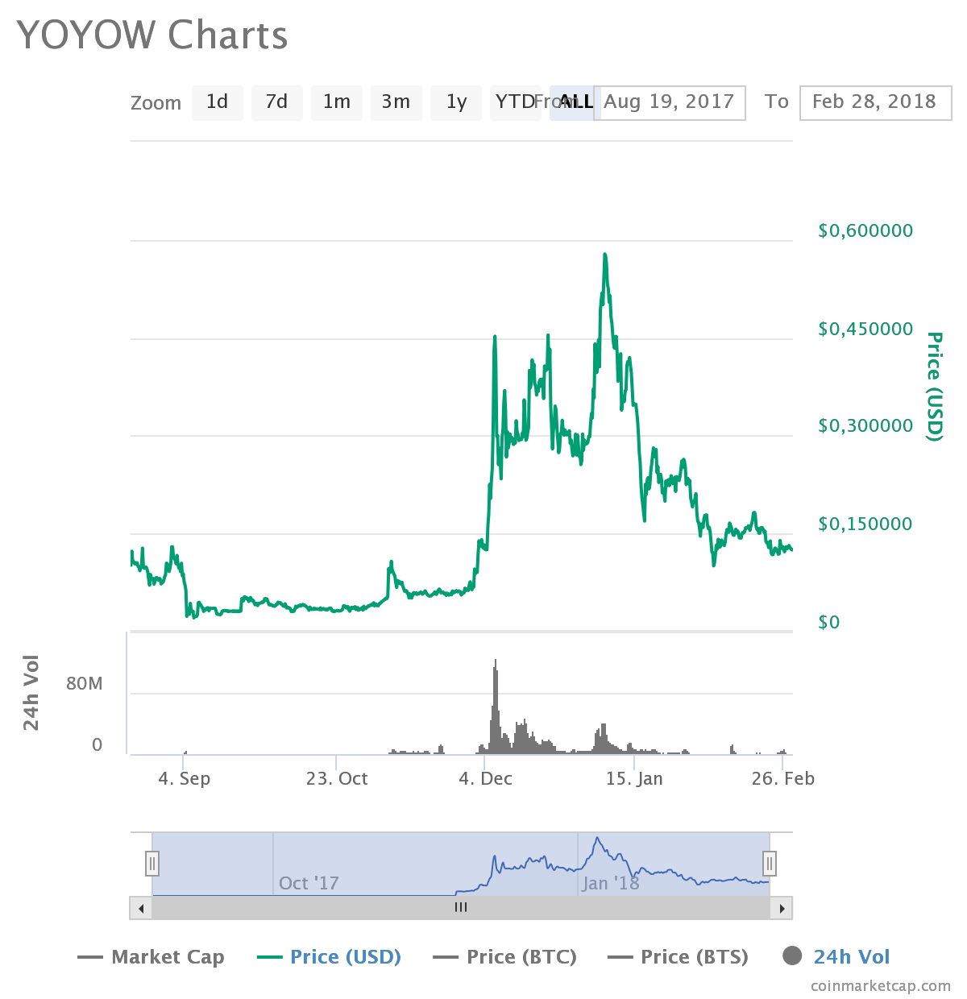
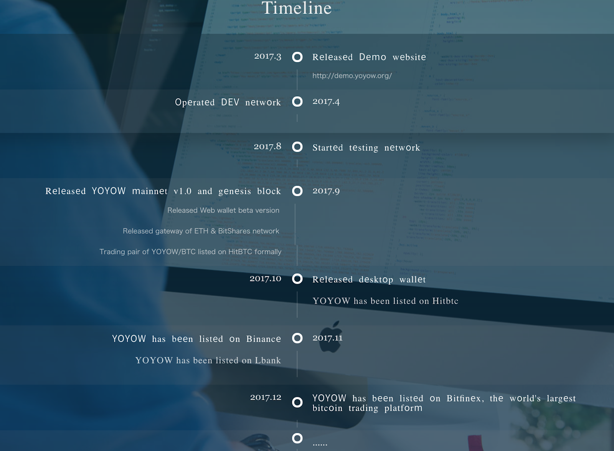

YOYOW, название которой сформировано из фразы “You Own Your Own Words” (Вы хозяин ваших слов), является сетью на базе технологии блокчейн, призванной создать экосистему контента и социальных сетей, в которой для производителей контента, контент-инвесторов, кураторов и потребителей будет создана рациональная система вознаграждений, основанная на системе рейтингов.
Сами разработчики называют YOYOW сетью вознаграждений за контент, основанной на блокчейне (“A blockchain based content rewards network”).
Активные пользователи социальных сетей, таких как Facebook, Reddit, Twitter и других, приносят массовый трафик и, соответственно, многомиллионную прибыль социальным площадкам. Тем не менее, пользователи никак не поощряются владельцами ресурсов, более того, они не являются настоящими владельцами своего контента, так как не имеют над ним полного контроля и не владеют прибылью, которую он приносит. Привнося технологию блокчейн в эту сферу, YOYOW должен создать прозрачную и эффективную систему оценки вклада пользователей. Автоматическое распределение расходов с помощью определенных алгоритмов и систем рейтингов смогут создать разумный механизм поощрения пользовательского контента (UGC - user generated content).
YOYOW это децентрализованная сеть, построенная на базе технологии Graphene, которая должна стать публичным блокчейном, ориентированным на рейтингование контента. В то же время планируется, что сторонние разработчики будут создавать мотивационные контент-ориентированные платформы на базе YOYOW. На ранних стадиях, YOYOW готова по необходимости предоставлять всестороннюю помощь разработчикам.
Первоначально сеть ориентирована на Китай, в дальнейшем планируется расширение географии проекта. Команда объясняет, что непросто сразу полноценно поддерживать мультиязычную платформу на должном уровне. Поэтому развитие в этой области будет осуществляться постепенно.
Механизмы и принципы эмиссии
Нативный токен системы - токен YOYO.
Общее количество токенов: 1 миллиард.
Количество токенов, распределенных во время ICO: 300 миллионов.
Зарезервировано для будущего развития: 100 миллионов.
Продвижение проекта и фонд для сторонних разработчиков: 300 миллионов.
Фонд развития: 300 миллионов.
Годовой уровень инфляции: первый год не более 10%, затем уровень инфляции будет снижаться из года в год.
ICO проводилась на 4-х платформах:
Bitshares DEX: 30 млн. токенов;
ICOAGE: 80 млн.токенов;
ICO365: 80 млн. токенов;
BTC9.com: 80 млн. токенов.
Также 30 млн. токенов были зарезервированы для добавления на платформу, на которой выделенные токены будут распроданы первыми.
ICO успешно состоялось в мае 2017 года. За 70 часов были распроданы все токены и собрано около 2000 BTC.
Стоит отметить, что при проведении ICO токены были двух форматов: ERC20 (Ethereum) и UIA (BitShares). После запуска основной сети YOYOW пользователям была предоставлена возможность обмена токена на токены основной сети, но в своем заявлении со-основатель проекта порекомендовал подождать с обменом, пока сеть не будет достаточно устойчива.
Токены проекта
Токены YOYO могут использоваться по следующим направлениям:
добавить определенный вес контенту для формирования рейтинга;
в качестве залога, чтобы стать witness (участником, отвечающим за формирование транзакций в блоки);
в качестве залога, чтобы создать собственную платформу на базе YOYOW;
генерация бонусных очков, компенсирующих комиссии за транзакции;
обеспечение передачи стоимости в качестве движимой единицы системы;
инвестирование в контент.
Также в White Paper и, например, на bitcointalk, упоминается еще один вид актива сети – WORD: автоматизированный механизм распределения доходов, подлежащий автоматическому выполнению за счет смарт-контрактов. WORD является активом, не подлежащим передаче и торгам (intradable), и распространяется среди членов платформы YOYOW. Владельцы WORD могут влиять на механизмы стимулирования качества контента на их платформах-сообществах. Платформа-сообщество может определять механизм распределения WORD. Информация относительно этого вида актива ограничивается несколькими предложениями и не позволяет оценить его роль в работе сети, параметры распределения и т.п.
Механизмы обеспечения консенсуса
YOYOW работает на базе технологии Graphene, в которой используется алгоритм DPOS (Delegated Proof of Stake) - Делегированное Доказательство Доли.
Узлы сети в режиме реального времени голосуют, выбирая тем самым перечень лиц, которые будут обладать правом создавать и верифицировать блоки, включать их в блокчейн. Голоса пользователей имеют свой пропорциональный вес, который зависит от количества токенов, находящихся во владении пользователя. После каждого раунда формирования блока транзакций перечень лиц (делегатов) перегруппировывается случайным образом.
Архитектура системы
Экосистема YOYOW состоит из 5 уровней:
На нижнем уровне находится технология Graphene, которая обеспечивает базовый функционал блокчейна: формат блока, алгоритм консенсуса, сеть и т.п.
YOYOW Core - это основной уровень, обеспечивающий логику работы системы: логика формирования рейтинга, управление доступом, алгоритм распределения вознаграждений, управление платформами-сообществами и т.п.
Universal Application Programming Interface (UAPI) предоставляет сторонним разработчикам API для использования возможностей платформы.
SDK, плагины, примеры приложений и документация в качестве помощи пользователям и разработчикам, у которых есть свои контентные платформы. В том числе ряд плагинов YOYOW, которые могут легко интегрироваться с форумами, блогами т .п.
На вершине располагаются платформы контента на базе YOYOW. Любые платформы, на которых есть тексты, видео, аудио, изображения, прямые трансляции могут быть обеспечены соответствующей платформой YOYOW, ориентированной на вознаграждение пользователей.
Виды участников и их взаимодействие
Пользователи смогут публиковать, репостить, комментировать, вознаграждать и оценивать контент на платформе.
Комитет
В основе механизма консенсуса DPOS лежит процесс голосования. Механизм голосования, веса голосов в котором пропорциональны владению токенов YOYO, позволяет выбирать состав Комитета (The Committee), который контролирует управление платформой YOYOW. Одной из основных обязанностей Комитета является корректировка переменных параметров системы, таких как стоимость платы за транзакцию, ежедневные вознаграждения, весовые характеристики системы рейтинга, плата и субсидии сторонних платформ, внедренных в систему, и т.п.
Система регистрации участников
Для того, чтобы получить аккаунт в сети YOYOW, необходимо пройти процедуру регистрации у уполномоченного регистратора. Уполномоченные регистраторы назначаются Комитетом. Уполномоченный регистратор также имеет право предоставлять или закрывать доступ участнику размещать что-либо на платформе.
Witnesses
Witnesses - пользователи, которых выбирают посредством DPOS и которые несут ответственность за формирование блоков транзакций. Так как witnesses несут ответственность за поддержание работы сети, они вознаграждаются за свою работу в токенах YOYO.
Регуляция контента и централизация
Учитывая высокие риски распространения медиаконтента в Китае, архитектура сети YOYOW предусматривает иерархическую систему регулирования контента:
Базы данных контента и фронтенд уровень разделены таким образом, что возможно отображение только отфильтрованного контента.
Незаконный контент может быть отредактирован администраторами на уровне блокчейна.
Система репутации будет благоприятно воздействовать на поведение пользователей.
С точки зрения управления в сети присутствует определенная централизация, которая необходима для ее развития:
В нынешних условиях регулирование контента определяет, выживет или исчезнет сеть YOYOW.
Блокчейн рассматривается исключительно как инструмент, способный сделать продукт лучше. Однако, первоочередной проблемой YOYOW считают возможность реализации и рентабельность всей экосистемы.
Если сеть подтвердит свою работоспособность и рентабельность, будут внедряться “умные” алгоритмы с развитой логикой вместо ручного вмешательства.
Лицензирование и юридические аспекты
YOYOW foundation зарегистрировано в юрисдикции Сингапур.
На данный момент отсутствует информация о взаимодействии команды с государственными регуляторами.
Китай отличается жесткими требования в сфере контентных медиа-платформ, поэтому в сети YOYOW осуществляется регуляция содержимого контента. С точки зрения развития платформы регуляция является плюсом, хотя и идет вразрез с идеологией децентрализованности.
С учетом возможности инвестирования в контент пользователей с последующим получением вознаграждений (подробнее в разделе “Встроенные механизмы и функции”), токены могут быть рассмотрены как “securities” (акции). Пока неясно, как осуществляется юридическое обеспечение этого процесса. К тому же при хранении на кошельке определенного количества токенов YOYO, владельцу начисляются бонусные очки, которые могут использоваться для оплаты комиссии при переводе. Подобный функционал тоже может расцениваться неоднозначно с точки зрения определения типа токена, так как предполагает “пассивный доход”.
Производительность и масштабируемость
YOYOW построена на базе технологии Graphene.
Поддерживаемые показатели TPS ( transaction per second / транзакций в секунду) составляют более 3’000.
При проведении тестов были достигнуты показатели TPS 10’682. Также разработчики говорят о возможности увеличения показателей до 100’000.
На сегодняшний день Graphene обладает ведущими показателями масштабируемости и производительности среди блокчейн-технологий.
Встроенные механизмы и функции
Платформы
Основными поставщиками услуг в сети YOYOW являются платформы, которые обеспечивают хранение контента, взаимодействие с пользователями, авторизированные службы входа. Любые сторонние пользователи могут регистрироваться в системе как платформы, внося определенное количество токенов YOYO в качестве залога. В то же время Комитет имеет право отозвать регистрацию платформы и конфисковать депозиты в случае нарушения консенсуса/общих положений.
Платформы будут получать вознаграждения пропорциональные интересу пользователей и доходам от рекламы.
Стоит отметить, что сама сеть YOYOW не хранит контент пользователей, а хранит хэши от него. Контент пользователей хранится либо на ресурсах платформ, либо с использованием систем распределенного хранения, например IPFS. Поскольку хэш-значения контента хранятся в сети YOYOW, контент не может быть незаметно изменен никакими платформами.
Помимо контент-платформы YOYOW будет создавать другие платформы в экосистеме, такие как платформы-сообщества, платформы агрегации контента, платформы защиты авторских прав и т.п.
Платформы-сообщества (Community platform)
Пользователи могут создавать приватные платформы-сообщества и настраивать условия доступа по своему усмотрению: оплата определенного количества токенов YOYO, одобрение администратора.
Администраторы платформ могут настраивать коэффициенты распределения внутренних доходов и создавать внутренние фонды.
Также платформы могут выпускать свои собственные токены. Эти токены поддерживаются доходами от рейтингованного контента и используются в качестве вознаграждения. Например, может быть указано, что 20% всех доходов платформы равномерно распределяются между владельцами внутреннего токена.
Репосты и комментарии
В сети YOYOW оригинальным авторам контента предоставляются настройки параметров репоста и лицензионных соглашений. В случае, если автор позволил делать репост своих записей, он будет получать не менее 20% дохода, полученного от репостов.
Пользователи могут комментировать публикуемый платформами контент. Так как комментарии несут ценность в контент-сети, они также рейтингуются и вознаграждаются.
Распределение доходов от контента
В сети YOYOW создан механизм инвестирования пользователями в контент, созданный другими пользователями, и получать прибыль от инвестиций, в то время как производители контента могут получать единовременные платежи от инвесторов и последующие вознаграждения за контент.
При публикации контента пользователи могут указывать инвестиционную модель (долевое распределение, инвестиционные сроки и т.п.). После завершения сроков доходы, генерируемые контентом, будут распределяться между производителями контента и инвесторами, в соответствии с долевым распределением, регулируемым смарт-контрактом.
Система рекламы
Для пользователей будет предусмотрена система рекламы, которая позволит пользователю выбирать платформу в сети, на которой будет рекламироваться его контент. В кошельке пользователь сможет выбирать рекламную площадку, подходящий стандарт оплаты и покупать “рекламное пространство” на токены YOYO. Исторические данные показателей эффективности, доходов и т. п. платформ будут представлены пользователю в качестве справочной информации. Продолжительность и расположение рекламы регулируются смарт-контрактом между пользователем и администратором платформы.
Возможности интеграции
Платформа поддерживает интеграцию со многими типами медиа-платформ, таких как twitter, quora, reddit. Одним из основных направлений работы является разработка блокчейн-версии quora.
Также к сети могут присоединяться сторонние контент-платформы и использовать системы голосования.
Для использования возможностей сети YOYOW на сторонних сайты команда разрабатывает плагины для интеграции: WordPress, Joomla, Discuz, MediaWiki и т.п.
Продукт
Команда активно ведет разработку продукта и на 27 февраля 2018 года доступны следующие составляющие:
Запущена основная сеть YOYOW, за работой которой можно следить в YOYOW блокчейн-explorer. Работа над блокчейном продолжается. Например, в отчете о разработке от 27 февраля 2018 сказано, что внедрена регистрация контент-платформ в децентрализованном формате и возможность хранения не только хэшей, но и контента в блокчейне, и т.д.;
Запущены кошелек для ПК, веб-кошелек, command-line клиент;
Выпущена JavaScript версия SDK;
С момента проведения ICO прошло чуть больше полугода и за это время команда демонстрировала высокую активность разработки продуктов. За ходом разработки можно следить в отчетах команды в блоге. Частота отчетов стала ниже чем осенью 2017 года, но позволяет следить за работой команды над проектом. Стоит отметить, что на github отсутствует код самой сети YOYOW, выложен только код коннекторов к ней, соответственно сложно провести точную параллель между ходом разработки и отчетами. Но, судя по отчетам и отзывам пользователей, команда движется в правильном направлении по усилению параметров интеграции и расширению функционала продуктов.
В отчете от 22 декабря 2017 года было официально объявлено о первой социальной платформе Bitask (сайт, на которым пользователи задают вопросы на тему блокчейна и криптовалют), которая будет реализована на сети YOYOW.
Также, в отчете о разработке от 27 февраля 2018 сказано, что внедрена регистрация контент-платформ в децентрализованном формате.
Распространение
По данным coinmarketcap на 28 февраля 2018 распространение по биржам выглядит следующим образом:
Также, по информации в официальном Twitter, токен торгуется на таких площадках как CEX.io, OTCBTC, Bitfinex. Разница в данных может быть вызвана наличием токенов YOYO нескольких форматов, подробнее см. в разделе “Механизмы и принципы эмиссии”.
Динамика капитализации и цены токенов
На 28 февраля 2018 по данным coinmarketcap стоимость токена составляет $0,124751. До начала декабря 2017 цена токена YOYO была достаточно стабильна, затем последовал резкий скачок. Период высокой волатильности продолжался примерно до середины января 2018, затем началась стабилизация. Поведение цены в рамках этого периода сильно коррелируется с общим поведением рынка. Также 1 декабря токен YOYO появился на обменной площадке Bitfinex, что могло способствовать резкому увеличению объема торгов. Максимальная стоимость была достигнута 5 января 2018 и составляла $0,619764.
Характер динамики капитализации аналогичен. На 28 февраля объем рыночной капитализации составляет $30’490’282.
Анализ Road Map и White Paper
На официальном сайте представлена англоязычная версия White PaperWhite Paper (3 версия от 12 ноября 2017).
White Paper оставляет неоднозначное впечатление: с одной стороны в нем неплохо описаны типы участников сети, их взаимодействие, система вознаграждений и т.п., с другой - некоторые аспекты работы сети раскрыты поверхностно. Например, неясна роль и принципы функционирования особого типа активов WORD, которые упоминаются лишь вскользь.
Подробный Road Map на официальном сайте проекта отсутствует и в интернете попадается информация, что это сделано намерено, чтобы снизить риски плагиата идей проекта. Команда планирует опубликовать Road Map, но не в самом ближайшем будущем. За ходом разработки можно следить на github и по отчетам в блоге команды.
При этом в блоге сооснователя XiaoShan в записи, которая описывала детали предстоящего ICO, был приведен Road Map, обозначавший следующие вехи:
Март 2017 - выпуск демо-сайта;
Май 2017 - завершение разработки сети DEV;
Август 2017 - запуск тестовой сети;
Октябрь 2017 - релиз основной сети;
Ноябрь 2017 - завершение разработки функций API для сторонних веб-сайтов;
Март 2018 - запуск встроенных функций прогнозирования рынка;
Апрель 2018 - интеграция других сторонних приложений рынка прогнозов.
Стоит добавить, что 19 января 2018 в Twitter команда выложила пост с планом разработок на ближайшие 5 месяцев:
улучшение функциональности основной сети блокчейна YOYOW;
разработка ПО промежуточного уровня для основных приложений;
мобильные кошельки под IOS и Android;
интеграция нескольких контент-платформ с блокчейном YOYOW;
плагины с открытым исходным кодом для сторонних приложений.
Также на официальном сайте приведен Timeline с отметками основных вех развития проекта:
Анализ команды проекта и аффилированных лиц
Команда
На официальном сайте представлены следующие члены команды:
Qiang Liu - основатель.
Также является основателем hellobts.com, управляет самыми крупными группами Bitshares в мессенджерах WeChat и QQ (наиболее распространенные в Китае сервисы).
Jialing Liu - со-основатель.
Член комитета BitShares, основатель transwiser.com и со-основатель BitsClub, один из серьезных представителей Bitshares и Ethereum, ранний блокчейн-инвестор.
ZiCen - COO. Представитель BitShares в Китае, член комитета Bitshares, ранний блокчейн-энтузиаст и инвестор, обладает трехлетним опытом в технологии Graphene.
XiaoShan - сооснователь, отвечает за моделирование системных данных и параметры проектирования YOYOW.
PHD в электронике, ранний блокчейн-энтузиаст, хорошо разбирается в технологии Graphene. Является модератором китайской ветки форума bitsharestalk.org, администратором btsabc.org, посол openledger в Китае.
Имя скрыто - разработчик нижнего уровня ПО.
Отвечает за разработку архитектуры блокчейна и архитектурное проектирование системы. Специализировался на компьютерных науках в SJTU (Шанхайский университет Джао Тонг), 15-летний опыт работы в банковской и финансовой индустрии, разбирается с фронтендом и бэкендом Graphene, разработчик BitShares.
Necklace(xn-delegate) - сооснователь, Research & Development менеджер.
Опытный разработчик BitShares, разработчик мобильного кошелька bts-go, хорошо разбирается в системе IPFS.
Vianull - ответственный за разработку плагинов и UI, а также за роботизацию.
PHD в Beijing University of Posts and Telecommunications, интернет-предприниматель, специалист по сбору информации, NLP (нейро-лингвистическое программирование), разработчик веб-приложений.
В статье перед ICO представители команды отмечали, что над проектом работает еще трое разработчиков и большое количество маркетологов, которые не были связаны с проектом BitShares.
Советники и инвесторы
Также в статье перед ICO упоминались известные представители китайского сообщества BitShares, которые поддерживают проект в качестве инвесторов и/или советников:
Alt(baozi) - основатель btsbots.com, ранний участник BitShares;
Abit - талантливый разработчик BitShares и Steem;
Bo Shen - управляющий партнер Fenbushi Capital, со-основатель BitShares;
Eric Gu - со-основатель Metaverse (публичный блокчейн с развитыми возможностями цифровой идентификации) и обменной площадки szzc;
Chandler Guo - ранний инвестор и советник в блокчейн-стартапах, таких как Btc123, Bitbank, Bw, Bither, okcoin, huobi, LTC, ETC, Qtum, Metaverse и др. Широко известен в сообществах Bitcoin и Ethereum.
На официальном сайте приведена информация об еще одном советнике:
Роман Троненко - основатель и CTO gogo.tattoo (децентрализованная платформа для тату-художников), полиглот, бывший сотрудник Alibaba и важный разработчик Aliexpress. Специалист по хранению контента, защите авторских прав, IP-монетизации в блокчейн индустрии.
Партнеры
7 февраля 2018 команда заявила о стратегическом партнерстве с MDL Talent Hub: платформа для рынка поиска талантов (всесторонний поиск талантов, репутационная система, организация мероприятий и т.п.). Компании будут сотрудничать по следующим направлениям: обмен опытом и инновационными наработками в сфере блокчейн-технологий, маркетинг, разработка механизмов связывания токенов YOYO и MDL.
Конкуренты
Одним из основных конкурентов YOYOW является Steemit: обе платформы нацелены на стимулирование пользователей к созданию контента высокого качества, работают на базе одного механизма консенсуса. YOYOW называют оптимизированной версией Steemit для китайского рынка: улучшенная система рейтингования, системы рекламы и регистрации. Steemit ориентирован на зарубежный рынок и мало охватывает Китай, поэтому у платформы YOYOW есть все шансы на успешное развитие.
В сфере контента и системы его вознаграждения существуют и другие проекты, нацеленные на создание децентрализованной платформы с системой вознаграждений: QunQun,Weku; развлекательные децентрализованные p2p платформы: TRON и т.д.
Платформа YOYOW нацелена на создание экосистемы контента с рациональной системой стимулирования пользователей. Модульная архитектура, проверенная авторитетная базовая технология Graphene, востребованные встроенные системы рекламы и регистрации пользователей, опытная команда, высокая степень готовности продукта, все это говорит в пользу успеха проекта.
Система централизованного регулирования контента может вызывать скепсис у сторонников полной децентрализации и свободы, однако является плюсом для проекта на старте, так как снижает риски, связанные с жесткой регуляцией рынка контента в Китае. Пока проект ориентирован на Китайский рынок, что является как и плюсом - в Китае пока нет крупных игроков на рынке; так и сужает географию проекта. Однако, стоит учитывать, что команда делала заявления, в которых говорилось, что в будущем проект нацелен на расширение географии, но без конкретики по этому вопросу.
К минусам можно отнести отсутствие информации о юридическом консультировании проекта, с учетом возможного неоднозначного трактования типа нативного токена YOYO. Возможности пассивного дохода от его использования придают ему характеристики токенов-securities (акций). Также стоит отметить, что во время краудсейла было распределено только 30% токенов. Еще 30% зарезервировано для будущего развития проекта, и, действительно, команда устраивает airdropы при листинга токена на новых площадках и т.п., но плана по распределению этих токенов нет.
Даже с учетом вышеописанных минусов, у платформы YOYOW есть все шансы занять уверенные позиции на рынке. Особенно в случае, если команда не будет снижать темпы разработки и буду появляться новые проекты, присоединяющиеся к платформе YOYOW. У платформы очень мощная база в виде опытной команды из BitShares и технологии Graphene, при подтверждении востребованности продукта его известность возрастет.
Официальный сайт:
https://www.yoyow.org/index_en.html
Twitter:
https://twitter.com/InfoYoyow
Блог команды:
https://medium.com/@dacnow
Github:
https://github.com/yoyow-org
Bitcointalk:
https://bitcointalk.org/index.php?topic=1623498.0
Telegram:
https://t.me/HelloYOYOW